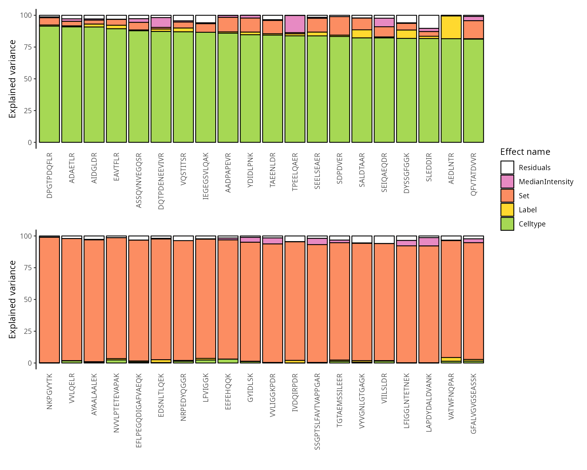

scplainer: reanalysis of the plexDIA dataset (Derks et al. 2022)
Christophe Vanderaa, Computational Biology, UCLouvain
Laurent Gatto, Computational Biology, UCLouvain
6 December 2023
scplainer_derks2022.RmdIntroduction
In this vignette, we will analyse the derks2022 dataset.
The data were acquired using the plexDIA protocol (Derks et
al. 2022). The authors performed mTRAQ-based labelling in DIA mode,
and showed that plexDIA could increase the cell throughput while
benefitting from the advantages of DIA.
Before delving into the scplainer workflow, we recommend first
familiarising with the scp and QFeatures
packages (see tutorials).
Packages and data
We rely on several packages to compile this vignette.
## Core packages
library("scp")
library("scpdata")
## Utility packages
library("ggplot2")
library("patchwork")
library("dplyr")
library("scater")
library("camprotR")The data set is available from the scpdata package.
derks <- derks2022()The data set contains 186 samples, including 12 negative control samples, 12 bulk samples, 52 monocytes (U-937), 55 melanoma cells, and 55 pancreatic ductal adenocarcinoma cells (PDAC). The samples were labelled with mTRAQ-3 acquired either with a Q-Exactive (n = 153) or a timsTOF-SCP instrument (n = 33).
Minimal data processing
The minimal data processing workflow consists of 5 main steps:
- Data cleaning
- Feature quality control
- Sample quality control
- Peptide data assembly
- Log2-transformation
Cleaning data
The data available in scpdata were provided by the
authors and were analysed with DIA-NN. We will start with the precursor
data and take advantage of DIA-NN’s capability to transfer precursor
identities across mTRAQ labels within the same runs. These data are
available in the qe_prec_extracted and
tims_prec_extracted assays.
derks <- derks[, , c("qe_prec_extracted", "tims_prec_extracted")]Next, we clean the cell type annotation and remove the
_t tags contained in cell type annotations that refer to
samples acquired with timsTOF-SCP. Note that samples annotated with a
_DB are bulk samples.
derks$Celltype <- sub("_t", "", derks$Celltype)
table(derks$Celltype)
##
## Melanoma Melanoma_DB Neg PDAC PDAC_DB U-937
## 55 1 12 55 1 52
## U-937_DB
## 1The instrument information is available in a dedicated descriptor.
table(derks$Instrument)
##
## Q-Exactive timsTOFSCP
## 144 33The data were acquired using mTRAQ-3 labelling ($$0, $$4 and $$8).
table(derks$Label)
##
## 0 4 8
## 59 59 59The data were acquired as part of 59 MS acquisition batches.
Next, we remove feature annotations that won’t be used in the remainder of the vignette. This is to avoid overcrowding of the annotation tables later in the vignette.
requiredRowData <- c(
"Protein.Group", "Protein.Ids", "Protein.Names", "Genes",
"First.Protein.Description", "Proteotypic", "Stripped.Sequence",
"Modified.Sequence", "Precursor.Charge", "Precursor.Id"
)
derks <- selectRowData(derks, requiredRowData)We replace zeros with missing values. A zero may be a true zero (the
feature is not present in the sample) or because of technical
limitations (due to the technology or the computational pre-processing).
Because we are not able to distinguish between the two, zeros should be
replaced with NA.
Below is an overview of the cleaned Qfeatures object
used as input data for the data analysis.
derks
## An instance of class QFeatures containing 2 assays:
## [1] qe_prec_extracted: SingleCellExperiment with 8590 rows and 144 columns
## [2] tims_prec_extracted: SingleCellExperiment with 8722 rows and 33 columnsFeature quality control
We remove contaminants peptides that may propagate technical
artefacts and bias data modelling. To identify contaminants we retrieve
the UniProt sequences in cRAP through the camprotR package.
We also remove any peptide that maps to a keratin sequence.
contaminants <- paste(get_ccp_crap(), collapse = "|")
keratins <- "KRT|^K\\d.\\d"
derks <- filterFeatures(derks, ~ !grepl(contaminants, Protein.Ids) &
!grepl(keratins, Protein.Names))Sample quality control
We next remove low-quality cells. The quality control criteria are:
- We remove samples with low number of detected peptides. The criterion is computed as follows:
derks <- countUniqueFeatures(
derks, i = names(derks),
groupBy = "Stripped.Sequence", colDataName = "NumberPeptides"
)- We remove samples with low median intensity. The metric (note we will later use it for normalisation) is computed as follows:
MedianIntensity <- lapply(experiments(derks), function(x) {
out <- colMedians(log(assay(x)), na.rm = TRUE)
names(out) <- colnames(x)
out
})
names(MedianIntensity) <- NULL
MedianIntensity <- unlist(MedianIntensity)
colData(derks)[names(MedianIntensity), "MedianIntensity"] <- MedianIntensity- We remove the samples that have a high median coefficient of
variation (CV). The CV is computed within each sample, by grouping the
peptides that belong to the same protein or protein group. Computing the
median CV requires peptide normalisation (
norm = "SCoPE2") to avoid that differences in ionisation obscure the quantification accuracy. This is computed as follows:
derks <- medianCVperCell(
derks, i = names(derks),
groupBy = "Protein.Ids", nobs = 3,
norm = "SCoPE2",
colDataName = "MedianCV"
)We plot the metrics used to perform sample quality control. Since two different instruments were used, we expect different metric distributions for each instrument and we plot the metrics separately.
pl <- list()
for (i in unique(derks$Instrument)) {
pl[[i]] <- data.frame(colData(derks)) |>
dplyr::filter(Instrument == i) |>
ggplot() +
aes(y = MedianIntensity,
x = NumberPeptides,
color = MedianCV,
shape = Celltype) +
ggtitle(i) +
geom_point(size = 2) +
scale_color_continuous(type = "viridis")
}
wrap_plots(pl)There are a few suspicious cells with a low number of detected peptides, a low median intensity and a high median CV. For the Q-Exactive dataset, we remove the group of cells that cluster with the negative control samples, that are cells with less than 750 peptides and a median intensity lower than 9.4. For the timsTOF-SCP dataset, we remove the group cells characterised by a median intensity lower than 6.5. We apply the QC filter but also remove any sample that is not a single cell.
derks$passQC <- (derks$Instrument == "Q-Exactive" &
derks$MedianIntensity > 9.4 &
derks$NumberPeptides > 750) |
(derks$Instrument == "timsTOFSCP" &
derks$MedianIntensity > 6.5)
derks$isSingleCell <- !grepl("Neg|DB$", derks$Celltype)
derks <- subsetByColData(derks, derks$passQC & derks$isSingleCell)Peptide data assembly
For now, we worked with precursor-level data. We here aggregate precursors into peptides. However, we need to solve a minor issue in the feature annotations. When aggregating peptides, we will only keep the feature annotations that have the common data. However, the protein groups differ among a few precursor from the same peptide. Hence, the protein groups and the associated gene names are not constant for some peptides that are removed during aggregation. To avoid this, we ensure consistant protein groups across precursor from the same peptide using majority vote.
ppMap <- rbindRowData(derks, i = names(derks)) %>%
data.frame %>%
group_by(Stripped.Sequence) %>%
## The majority vote happens here
summarise(
Protein.Group = names(sort(table(Protein.Group), decreasing = TRUE))[1],
Genes = names(sort(table(Genes), decreasing = TRUE))[1]
) %>%
dplyr::select(Stripped.Sequence, Protein.Group, Genes)
consensus <- lapply(names(derks), function(i) {
ind <- match(rowData(derks)[[i]]$Stripped.Sequence, ppMap$Stripped.Sequence)
DataFrame(
Protein.Group = ppMap$Protein.Group[ind],
Genes = ppMap$Genes[ind]
)
})
names(consensus) <- names(derks)
rowData(derks) <- consensusWe then can safely perform peptide aggregation.
peptideAssays <- paste0("peptides_", names(derks))
derks <- aggregateFeatures(
derks, i = names(derks),
fcol = "Stripped.Sequence",
name = peptideAssays,
fun = colMedians, na.rm = TRUE
)Moreover, the data are stored in separate assays for each instrument. We here combine the two assays into one.
derks <- joinAssays(derks, i = peptideAssays, name = "peptides")Log-transformation
We log2-transform the quantification data.
derks <- logTransform(derks, i = "peptides", name = "peptides_log")Here is an overview of the data processing:
plot(derks)Data modelling
Model the data using scplainer, a linear regression model implemented
in scp. The model is applied on a
SingleCellExperiment so we extract it from the processed
data set along with the colData
sce <- getWithColData(derks, "peptides_log")First, we must specify which variables to include in the model. We here include 4 variables:
-
MedianIntensity: this is the normalisation factor used to correct for cell-specific technical differences. -
Set: this is used to perform batch correction. We consider each acquisition run to be a batch. -
Label: this is used to correct for mTRAQ effects. -
Celltype: this is the biological variable of interest. It captures the difference between macrophages and monocytes
scpModelWorkflow() fits linear regression models to the
data, where the model is adapted for each peptide depending on its
pattern of missing values.
sce <- scpModelWorkflow(
sce,
formula = ~ 1 + ## intercept
## normalisation
MedianIntensity +
## batch effects
Set + Label +
## biological variability
Celltype)Once the model is prepared, we can explore the distribution of the n/p ratios.
scpModelFilterPlot(sce)About 40 % of the peptides do not have sufficient observations to estimate the model. You could consider \(n/p\) a rough average of the number of replicates per parameter to fit (for categorical variables, the number of replicates per group). We recommend moving the threshold away from 1 to increase statistical power and remove noisy peptides. This comes of course at the cost of less peptides included in the analysis.
Model analysis
The model analysis consists of three steps:
- Analysis of variance
- Differential abundance analysis
- Component analysis
Analysis of variance
The analysis of variance explores the proportion of data captures by each variable in the model.
(vaRes <- scpVarianceAnalysis(sce))
## DataFrameList of length 5
## names(5): Residuals MedianIntensity Set Label Celltype
vaRes[[1]]
## DataFrame with 4037 rows and 4 columns
## feature SS df percentExplainedVar
## <character> <numeric> <numeric> <numeric>
## 1 AAAAAAALQA... 7.4410176 42 1.3163177
## 2 AAAEDVNVTF... 5.7902940 4 2.1208123
## 3 AAAEVNQDYG... 7.6434457 11 8.6315618
## 4 AAALEFLNR 0.0125425 1 0.0134479
## 5 AAANEQLTR 13.7693132 22 4.1179696
## ... ... ... ... ...
## 4033 QTDVGITHFR 10.021577 8 11.149523
## 4034 VAIYSPDGVR 0.538425 3 0.633974
## 4035 YGDAFIR 1.301915 3 3.389192
## 4036 SDTFINLR 3.207778 7 5.320569
## 4037 VFIEDVSR 6.065779 5 4.867759The results are a list of tables, one table for each variable. Each
table reports for each peptide the variance captures (SS),
the residual degrees of freedom for estimating the variance
(df) and the percentage of total variance explained
(percentExplainedVar). To better explore the results, we
add the annotations available in the rowData.
vaRes <- scpAnnotateResults(
vaRes, rowData(sce), by = "feature", by2 = "Stripped.Sequence"
)By default, we explore the variance for all peptides combined:
scpVariancePlot(vaRes)We explore the top 20 peptides that are have the highest percentage of variance explained by the biological variable (top) or by the batch variable (bottom).
scpVariancePlot(
vaRes, top = 20, by = "percentExplainedVar", effect = "Celltype",
decreasing = TRUE, combined = FALSE
) +
scpVariancePlot(
vaRes, top = 20, by = "percentExplainedVar", effect = "Set",
decreasing = TRUE, combined = FALSE
) +
plot_layout(ncol = 1, guides = "collect")
We can also group these peptide according to their protein. We simply
need to provide the fcol argument.
scpVariancePlot(
vaRes, top = 20, by = "percentExplainedVar", effect = "Celltype",
decreasing = TRUE, combined = FALSE, fcol = "Genes"
) +
scpVariancePlot(
vaRes, top = 20, by = "percentExplainedVar", effect = "Set",
decreasing = TRUE, combined = FALSE, fcol = "Genes"
) +
plot_layout(ncol = 1, guides = "collect")Differential abundance analysis
Next, we explore the model output to understand the differences
between the cell types. The difference of interest is specified using
the contrast argument. The first element points to the
variable to test and the two following element are the groups of
interest to compare. You can provide multiple contrast in a list.
(daRes <- scpDifferentialAnalysis(
sce, contrast = list(
c("Celltype", "Melanoma", "PDAC"),
c("Celltype", "Melanoma", "U-937"),
c("Celltype", "PDAC", "U-937")
)
))
## List of length 3
## names(3): Celltype_Melanoma_vs_PDAC Celltype_Melanoma_vs_U.937 Celltype_PDAC_vs_U.937
daRes[[1]]
## DataFrame with 4037 rows and 7 columns
## feature Estimate SE Df tstatistic pvalue
## <character> <numeric> <numeric> <numeric> <numeric> <numeric>
## 1 AAAAAAALQA... 0.363610 0.0961336 42 3.782347 0.000485767
## 2 AAAEDVNVTF... 0.422119 1.0414839 4 0.405305 0.705994818
## 3 AAAEVNQDYG... 0.883843 0.3117647 11 2.834969 0.016227253
## 4 AAALEFLNR -1.817356 0.1650310 1 -11.012211 0.057652227
## 5 AAANEQLTR -0.110730 0.2340733 22 -0.473055 0.640833487
## ... ... ... ... ... ... ...
## 4033 QTDVGITHFR 0.389972 1.033239 8 0.377427 0.71567241
## 4034 VAIYSPDGVR -4.447359 0.467208 3 -9.519019 0.00245869
## 4035 YGDAFIR 0.691946 0.701938 3 0.985766 0.39692989
## 4036 SDTFINLR 0.137518 0.609705 7 0.225548 0.82799636
## 4037 VFIEDVSR -5.064273 0.984345 5 -5.144816 0.00363063
## padj
## <numeric>
## 1 0.00341817
## 2 0.84068845
## 3 0.06279106
## 4 0.16187589
## 5 0.79421530
## ... ...
## 4033 0.8459663
## 4034 0.0131652
## 4035 0.5967268
## 4036 0.9084303
## 4037 0.0181854Similarly to analysis of variance, the results are a list of tables,
one table for each contrast. Each table reports for each peptide the
estimated difference between the two groups, the standard error
associated to the estimation, the degrees of freedom, the t-statistics,
the associated p-value and the p-value FDR-adjusted for multiple testing
across all peptides. Again, to better explore the results, we add the
annotations available in the rowData.
daRes <- scpAnnotateResults(
daRes, rowData(sce),
by = "feature", by2 = "Stripped.Sequence"
)We then visualize the results using a volcano plot. The function below return a volcano plot for each contrast.
wrap_plots(scpVolcanoPlot(daRes))To help interpretation of the results, we will label the peptides with their protein name. Also we increase the number of labels shown on the plot. Finally, we can add colors to the plot. For instance, let’s explore the impact of the number of observations using the \(n/p\) ratio. We create a new annotation table, add it to the results and redraw the plot. The \(n/p\) ratio is retrieved using scpModelFilterNPRatio
np <- scpModelFilterNPRatio(sce)
daRes <- scpAnnotateResults(
daRes, data.frame(feature = names(np), npRatio = np),
by = "feature"
)
wrap_plots(scpVolcanoPlot(
daRes, top = 30, textBy = "Genes",
pointParams = list(aes(colour = npRatio))
))As expected, higher number of observations (higher \(n/p\)) lead to increased statistical power and hence to more significant results.
Finally, we offer functionality to report results at the protein level.
scpDifferentialAggregate(daRes, fcol = "Genes") |>
scpVolcanoPlot(top = 30, textBy = "Genes") |>
wrap_plots()Component analysis
Finally, we perform component analysis to link the modelled effects to the cellular heterogeneity. We here run an APCA+ (extended ANOVA-simultaneous principal component analysis) for the sample type effect. In other words, we perform a PCA on the data that is capture by the sample type variable along with the residuals (unmodelled data).
(caRes <- scpComponentAnalysis(
sce, ncomp = 2, method = "APCA", effect = "Celltype"
))
## [1] "APCA"
## [1] "Celltype"
## List of length 2
## names(2): bySample byFeatureThe results are contained in a list with 2 elements.
bySample contains the PC scores, that is the component
results in sample space. byFeature contains the
eigenvectors, that is the component results in feature space.
caRes$bySample
## List of length 3
## names(3): unmodelled residuals APCA_CelltypeEach of the two elements contains components results for the data
before modelling (unmodelled), for the residuals or for the
APCA on the sample type variable (APCA_Celltype).
caRes$bySample[[1]]
## DataFrame with 122 rows and 3 columns
## PC1
## <numeric>
## F..JD.plexDIA.nPOP.wJD1146.raw.4 55.8240
## F..JD.plexDIA.nPOP.wJD1146.raw.8 39.1033
## F..JD.plexDIA.nPOP.wJD1147.raw.0 18.2279
## F..JD.plexDIA.nPOP.wJD1147.raw.4 83.2346
## F..JD.plexDIA.nPOP.wJD1148.raw.0 40.2493
## ... ...
## F..JD.plexDIA.Bruker.OneDrive_1_3.9.2022.20220308_npop_SCP_8_Slot2.8_1_222.d.4 -76.8229
## F..JD.plexDIA.Bruker.OneDrive_1_3.9.2022.20220308_npop_SCP_8_Slot2.8_1_222.d.8 -94.2885
## F..JD.plexDIA.Bruker.OneDrive_1_3.9.2022.20220308_npop_SCP_9_Slot2.9_1_223.d.0 -80.4816
## F..JD.plexDIA.Bruker.OneDrive_1_3.9.2022.20220308_npop_SCP_9_Slot2.9_1_223.d.4 -105.6186
## F..JD.plexDIA.Bruker.OneDrive_1_3.9.2022.20220308_npop_SCP_9_Slot2.9_1_223.d.8 -79.6811
## PC2
## <numeric>
## F..JD.plexDIA.nPOP.wJD1146.raw.4 34.5480
## F..JD.plexDIA.nPOP.wJD1146.raw.8 -39.6912
## F..JD.plexDIA.nPOP.wJD1147.raw.0 -31.4929
## F..JD.plexDIA.nPOP.wJD1147.raw.4 -67.5675
## F..JD.plexDIA.nPOP.wJD1148.raw.0 -46.8058
## ... ...
## F..JD.plexDIA.Bruker.OneDrive_1_3.9.2022.20220308_npop_SCP_8_Slot2.8_1_222.d.4 1.455085
## F..JD.plexDIA.Bruker.OneDrive_1_3.9.2022.20220308_npop_SCP_8_Slot2.8_1_222.d.8 12.151391
## F..JD.plexDIA.Bruker.OneDrive_1_3.9.2022.20220308_npop_SCP_9_Slot2.9_1_223.d.0 -0.922176
## F..JD.plexDIA.Bruker.OneDrive_1_3.9.2022.20220308_npop_SCP_9_Slot2.9_1_223.d.4 10.664048
## F..JD.plexDIA.Bruker.OneDrive_1_3.9.2022.20220308_npop_SCP_9_Slot2.9_1_223.d.8 -59.582158
## cell
## <character>
## F..JD.plexDIA.nPOP.wJD1146.raw.4 F..JD.plex...
## F..JD.plexDIA.nPOP.wJD1146.raw.8 F..JD.plex...
## F..JD.plexDIA.nPOP.wJD1147.raw.0 F..JD.plex...
## F..JD.plexDIA.nPOP.wJD1147.raw.4 F..JD.plex...
## F..JD.plexDIA.nPOP.wJD1148.raw.0 F..JD.plex...
## ... ...
## F..JD.plexDIA.Bruker.OneDrive_1_3.9.2022.20220308_npop_SCP_8_Slot2.8_1_222.d.4 F..JD.plex...
## F..JD.plexDIA.Bruker.OneDrive_1_3.9.2022.20220308_npop_SCP_8_Slot2.8_1_222.d.8 F..JD.plex...
## F..JD.plexDIA.Bruker.OneDrive_1_3.9.2022.20220308_npop_SCP_9_Slot2.9_1_223.d.0 F..JD.plex...
## F..JD.plexDIA.Bruker.OneDrive_1_3.9.2022.20220308_npop_SCP_9_Slot2.9_1_223.d.4 F..JD.plex...
## F..JD.plexDIA.Bruker.OneDrive_1_3.9.2022.20220308_npop_SCP_9_Slot2.9_1_223.d.8 F..JD.plex...Each elements is a table with the computed componoents. Let’s explore the component analysis results in cell space. Similarly to the previous explorations, we annotate the results.
caResCells <- caRes$bySample
sce$cell <- colnames(sce)
caResCells <- scpAnnotateResults(caResCells, colData(sce), by = "cell")We then generate the component plot, colouring by
Celltype. To assess the impact of batch effects, we shape
the points according to the plate batch (cf intro) as well.
scpComponentPlot(
caResCells,
pointParams = list(aes(colour = Celltype, shape = Instrument))
) |>
wrap_plots() +
plot_layout(guides = "collect")
While the data before modelling is mainly driven by batch effects (instruments are separated on the first PC), the APCA clearly separates the three cell populations. The PCA on the residuals suggests that no additional unmodelled effects influence the data globally, indicating that our model accurately captures the variation in the data.
We use the same approach to explore the component results in feature space.
caResPeps <- caRes$byFeature
caResPeps <- scpAnnotateResults(
caResPeps, rowData(sce), by = "feature", by2 = "Stripped.Sequence"
)We plot the compenents in peptide-space.
plCApeps <- scpComponentPlot(
caResPeps, pointParams = list(size = 0.8, alpha = 0.4)
)
wrap_plots(plCApeps)We can also combine the exploration of the components in cell and peptide space. This is possible thanks to biplots.
biplots <- scpComponentBiplot(
caResCells, caResPeps,
pointParams = list(aes(colour = Celltype, shape = Instrument)),
labelParams = list(size = 1.5, max.overlaps = 20),
textBy = "Genes", top = 20
)
wrap_plots(biplots, guides = "collect")Finally, we offer functionality to aggregate the results at the protein level instead of the peptide level.
caResProts <- scpComponentAggregate(caResPeps, fcol = "Genes")
biplots <- scpComponentBiplot(
caResCells, caResProts,
pointParams = list(aes(colour = Celltype, shape = Instrument)),
labelParams = list(size = 1.5, max.overlaps = 20),
textBy = "Genes", top = 20
)
wrap_plots(biplots, guides = "collect")Interactive visualisation with iSEE
You can manually explore the data through an interactive interface
thanks to using iSEE:
Session information
R Under development (unstable) (2023-07-27 r84768)
Platform: x86_64-pc-linux-gnu
Running under: Ubuntu 23.04
Matrix products: default
BLAS: /usr/lib/x86_64-linux-gnu/blas/libblas.so.3.11.0
LAPACK: /usr/lib/x86_64-linux-gnu/lapack/liblapack.so.3.11.0
locale:
[1] LC_CTYPE=en_US.UTF-8 LC_NUMERIC=C
[3] LC_TIME=en_US.UTF-8 LC_COLLATE=en_US.UTF-8
[5] LC_MONETARY=en_US.UTF-8 LC_MESSAGES=en_US.UTF-8
[7] LC_PAPER=en_US.UTF-8 LC_NAME=C
[9] LC_ADDRESS=C LC_TELEPHONE=C
[11] LC_MEASUREMENT=en_US.UTF-8 LC_IDENTIFICATION=C
time zone: Europe/Prague
tzcode source: system (glibc)
attached base packages:
[1] stats4 stats graphics grDevices utils datasets methods
[8] base
other attached packages:
[1] camprotR_0.0.0.9000 scater_1.31.0
[3] scuttle_1.13.0 SingleCellExperiment_1.25.0
[5] dplyr_1.1.3 patchwork_1.1.3
[7] ggplot2_3.4.4 scpdata_1.9.2
[9] ExperimentHub_2.11.0 AnnotationHub_3.11.0
[11] BiocFileCache_2.11.1 dbplyr_2.4.0
[13] scp_1.11.3 QFeatures_1.13.0
[15] MultiAssayExperiment_1.29.0 SummarizedExperiment_1.33.0
[17] Biobase_2.63.0 GenomicRanges_1.55.1
[19] GenomeInfoDb_1.39.0 IRanges_2.37.0
[21] S4Vectors_0.41.1 BiocGenerics_0.49.1
[23] MatrixGenerics_1.15.0 matrixStats_1.1.0
[25] BiocStyle_2.31.0
loaded via a namespace (and not attached):
[1] later_1.3.1 bitops_1.0-7
[3] filelock_1.0.2 tibble_3.2.1
[5] lpsymphony_1.31.0 preprocessCore_1.65.0
[7] XML_3.99-0.15 lifecycle_1.0.4
[9] doParallel_1.0.17 rprojroot_2.0.4
[11] lattice_0.22-5 MASS_7.3-60.1
[13] magrittr_2.0.3 limma_3.59.1
[15] sass_0.4.7 rmarkdown_2.25
[17] jquerylib_0.1.4 yaml_2.3.7
[19] metapod_1.11.0 httpuv_1.6.12
[21] MsCoreUtils_1.15.1 DBI_1.1.3
[23] RColorBrewer_1.1-3 abind_1.4-5
[25] zlibbioc_1.49.0 purrr_1.0.2
[27] AnnotationFilter_1.27.0 RCurl_1.98-1.13
[29] rappdirs_0.3.3 GenomeInfoDbData_1.2.11
[31] ggrepel_0.9.4 irlba_2.3.5.1
[33] MSnbase_2.29.0 pkgdown_2.0.7
[35] DelayedMatrixStats_1.25.0 ncdf4_1.21
[37] codetools_0.2-19 DelayedArray_0.29.0
[39] tidyselect_1.2.0 farver_2.1.1
[41] ScaledMatrix_1.11.0 viridis_0.6.4
[43] nipals_0.8 jsonlite_1.8.7
[45] BiocNeighbors_1.21.0 ellipsis_0.3.2
[47] iterators_1.0.14 systemfonts_1.0.5
[49] foreach_1.5.2 tools_4.4.0
[51] ragg_1.2.6 Rcpp_1.0.11
[53] glue_1.6.2 BiocBaseUtils_1.5.0
[55] gridExtra_2.3 SparseArray_1.3.0
[57] xfun_0.41 withr_2.5.2
[59] BiocManager_1.30.22 fastmap_1.1.1
[61] fansi_1.0.5 digest_0.6.33
[63] rsvd_1.0.5 R6_2.5.1
[65] mime_0.12 textshaping_0.3.7
[67] colorspace_2.1-0 RSQLite_2.3.3
[69] utf8_1.2.4 tidyr_1.3.0
[71] generics_0.1.3 robustbase_0.99-0
[73] httr_1.4.7 S4Arrays_1.3.0
[75] pkgconfig_2.0.3 gtable_0.3.4
[77] blob_1.2.4 impute_1.77.0
[79] XVector_0.43.0 htmltools_0.5.7
[81] bookdown_0.36 MALDIquant_1.22.1
[83] ProtGenerics_1.35.0 clue_0.3-65
[85] scales_1.2.1 png_0.1-8
[87] knitr_1.45 rstudioapi_0.15.0
[89] curl_5.1.0 cachem_1.0.8
[91] stringr_1.5.0 BiocVersion_3.19.1
[93] parallel_4.4.0 vipor_0.4.5
[95] AnnotationDbi_1.65.2 mzID_1.41.0
[97] vsn_3.71.0 desc_1.4.2
[99] pillar_1.9.0 grid_4.4.0
[101] vctrs_0.6.4 pcaMethods_1.95.0
[103] slam_0.1-50 promises_1.2.1
[105] BiocSingular_1.19.0 IHW_1.31.0
[107] beachmat_2.19.0 xtable_1.8-4
[109] cluster_2.1.4 beeswarm_0.4.0
[111] evaluate_0.23 cli_3.6.1
[113] compiler_4.4.0 rlang_1.1.2
[115] crayon_1.5.2 labeling_0.4.3
[117] fdrtool_1.2.17 affy_1.81.0
[119] plyr_1.8.9 fs_1.6.3
[121] ggbeeswarm_0.7.2 stringi_1.7.12
[123] viridisLite_0.4.2 BiocParallel_1.37.0
[125] munsell_0.5.0 Biostrings_2.71.1
[127] lazyeval_0.2.2 Matrix_1.6-1.1
[129] sparseMatrixStats_1.15.0 bit64_4.0.5
[131] KEGGREST_1.43.0 statmod_1.5.0
[133] shiny_1.7.5.1 highr_0.10
[135] interactiveDisplayBase_1.41.0 mzR_2.37.0
[137] igraph_1.5.1 memoise_2.0.1
[139] affyio_1.73.0 bslib_0.5.1
[141] DEoptimR_1.1-3 bit_4.0.5 Citation
citation("scp")
To cite the scp package in publications use:
Vanderaa, Christophe, and Laurent Gatto. 2023. Revisiting the Thorny
Issue of Missing Values in Single-Cell Proteomics. Journal of
Proteome Research 22 (9): 2775–84.
Vanderaa Christophe and Laurent Gatto. The current state of
single-cell proteomics data analysis. Current Protocols 3 (1): e658.;
doi: https://doi.org/10.1002/cpz1.658 (2023).
Vanderaa Christophe and Laurent Gatto. Replication of Single-Cell
Proteomics Data Reveals Important Computational Challenges. Expert
Review of Proteomics, 1–9 (2021).
To see these entries in BibTeX format, use 'print(<citation>,
bibtex=TRUE)', 'toBibtex(.)', or set
'options(citation.bibtex.max=999)'.License
This vignette is distributed under a CC BY-SA license license.